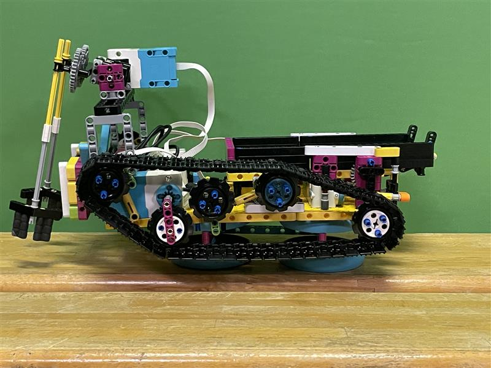
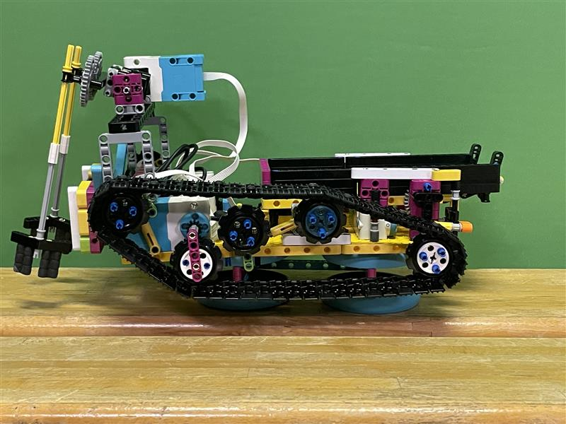
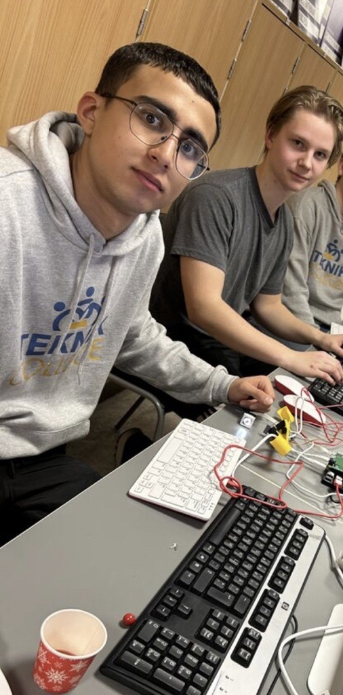

⚡ Blixtlåset-tävlingen
Jag deltog i Blixtlåset med min grupp. Vi skapade en prototyp-robot som kunde plocka upp skräp och prata med människor samtidigt. Det var ett spännande projekt där jag jobbade mycket med både teknik och presentation. Vi samarbetade för att lösa problem och utveckla en lösning som skulle kunna göra skillnad i samhället. Jag tog hand om programmeringsdelen i gruppen.
 

RobotFest2025
Här deltog jag i RobotFest2025. Vi gjorde en kulbana av lego. Målet var att göra en maskin som låter en kula (14mm i diameter) rulla i exakt 30 sekunder från start till mål. Vi lärde de yngre också att bygga en sådant fast med andra material.

Kulsortering(2024)
I detta projektet ansvarade mitt grupp främst för programmeringen. Vi använde sensorer, servomotorer osv, vilket gav oss praktisk erfarenhet inom elektronik, mekanik, mekatronik och programmering. Projektet presenterades sedan på öppet hus.
